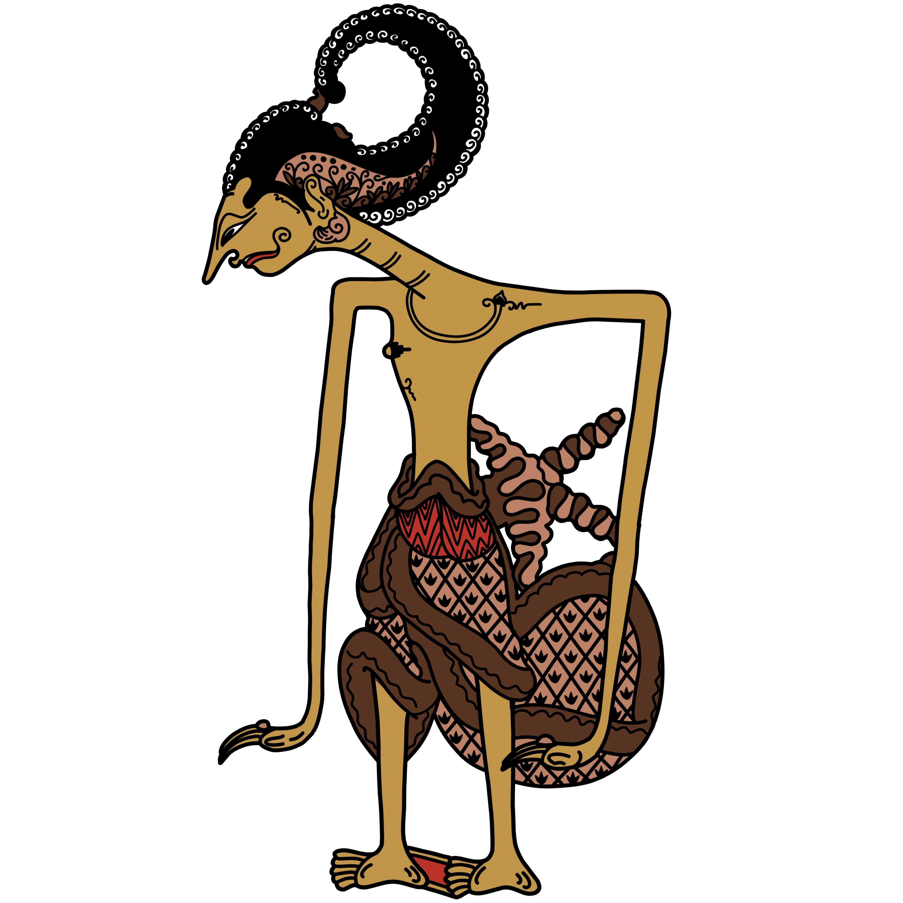
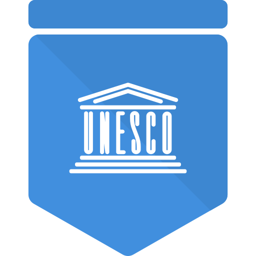
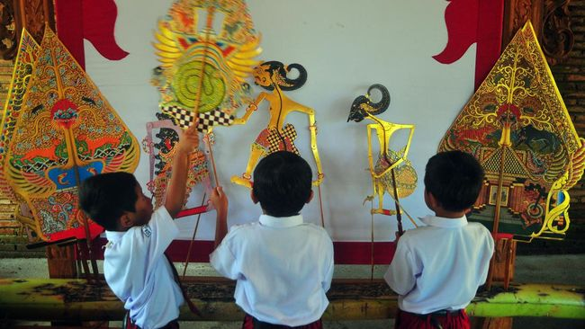

- Cari lemari display asli di dalam museum, sesuai lantai & ruangan yang dipilih.
- Pilih ikon wayang pada layar sesuai posisi koleksi di lemari.
- Atau tekan tombol 📷 SCAN QR WAYANG untuk scan langsung.
- Arahkan kamera ke QR Code yang ada di dekat wayang.
- Baca informasi detail, dengarkan narasi audio, lalu kerjakan kuisnya.
- Jika kuis benar, ikon berubah EMAS! Kumpulkan ke-18 emasnya!
MUSEUM WAYANG
Selamat datang di Digitalisasi Museum Wayang Jakarta Kota.
Rasakan pengalaman menyusuri mahakarya Nusantara secara interaktif.

100+
Koleksi Wayang

2008
Warisan Budaya Tak Benda UNESCO
5
Landasan Hukum
Fitur
Edukasi & Literasi
⌄ Geser untuk informasi lebih lanjut ⌄
❧ Pelestarian Budaya Bangsa ❧
Kebanggaan Pemajuan Kebudayaan Pelestarian & Hukum Budaya
Pelestarian warisan budaya luhur, seperti wayang dan beragam tradisi Nusantara lainnya, adalah panggilan jiwa bagi setiap generasi. Daripada sekadar bereaksi saat terjadi klaim dari pihak luar, langkah terbaik dan paling bermartabat yang bisa kita lakukan adalah secara aktif merawat, mencatatkan, dan memajukan kekayaan budaya kita. Kerangka hukum nasional yang kuat, didukung oleh komitmen internasional, telah hadir bukan sekadar sebagai alat penyelesaian konflik, melainkan sebagai pedoman dan perisai bagi kita. Mari jadikan hukum sebagai landasan untuk melindungi keaslian tradisi, mempromosikan kekayaan intelektual (KIK), dan memastikan keberlanjutan budaya Nusantara di pentas global.
Landasan Hukum Pelestarian Budaya
- Undang-Undang Republik Indonesia Nomor 11 Tahun 2010 tentang Cagar Budaya — Mengajak kita untuk mengenali kriteria, mencatatkan ke dalam register nasional, serta memberikan kepastian pelindungan hukum bagi benda-benda cagar budaya agar tidak rusak atau hilang.
- Peraturan Presiden Nomor 78 Tahun 2007 tentang Pengesahan Konvensi UNESCO 2003 mengenai Perlindungan Warisan Budaya Takbenda — Bukti komitmen kita bersama dunia internasional dalam melestarikan budaya takbenda (seperti seni pertunjukan wayang, tradisi lisan, dan pengetahuan lokal) agar tetap hidup dan diwariskan ke generasi berikutnya.
- Peraturan Pemerintah (PP) Nomor 1 Tahun 2022 tentang Register Nasional dan Pelestarian Cagar Budaya — Merupakan aturan pelaksana dari UU No. 11/2010 yang memberikan panduan teknis bagi masyarakat dan pemerintah untuk bersinergi dalam mendata dan melestarikan cagar budaya kita.
- Undang-Undang Nomor 5 Tahun 2017 tentang Pemajuan Kebudayaan — Landasan utama yang mengajak seluruh elemen masyarakat untuk tidak hanya melindungi, tetapi juga mengembangkan, memanfaatkan, dan membina objek pemajuan kebudayaan nasional agar kebudayaan Indonesia semakin tangguh.
- Membangun Persahabatan & Kebanggaan Budaya di Mata Dunia — Melalui Pasal 35 dan Pasal 43 huruf i & j UU No. 5 Tahun 2017, kita diamanatkan untuk melakukan diplomasi budaya yang damai, proaktif memperkenalkan kekayaan budaya kita, dan meningkatkan kerja sama internasional demi kejayaan kebudayaan Nusantara.
Ayo, Rawat Warisan Nusantara
❧ Artikel Wayang ❧
Sejarah
Sejarah & Asal-Usul Wayang Nusantara
Wayang merupakan seni pertunjukan yang telah hadir sejak lebih dari seribu tahun lalu di tanah Nusantara, menjadi cerminan jiwa dan filsafat masyarakat...
Ketuk untuk detail
Internasional

Wayang & Pengakuan UNESCO 2003
Pada 7 November 2003, UNESCO secara resmi menetapkan Wayang sebagai Masterpiece of the Oral and Intangible Heritage of Humanity...
Ketuk untuk detail
Pelestarian

Melestarikan Wayang: Warisan Budaya untuk Generasi Mendatang
Pelestarian wayang bukan sekadar menjaga benda seni — ini adalah ikhtiar menjaga identitas bangsa, nilai luhur, dan kearifan lokal yang tertuang dalam landasan hukum...
Ketuk untuk detail
Judul Artikel
Kategori
| Nama Koleksi | Deskripsi / Ciri-Ciri |
|---|
Warisan Budaya Tak Benda UNESCO
Representative List of the Intangible Cultural Heritage of Humanity — 2008
🔗 Referensi Resmi: ich.unesco.org

📸 Foto resmi dari arsip ich.unesco.org
Pada tahun 2008, Wayang resmi dimasukkan ke dalam Daftar Representatif Warisan Budaya Tak Benda Umat Manusia (Representative List of the Intangible Cultural Heritage of Humanity) oleh UNESCO — sebuah pengakuan tertinggi di tingkat global yang memperkuat status wayang sebagai warisan budaya hidup yang harus terus dijaga dan diwariskan.
Pengakuan ini merupakan lanjutan dari proklamasi awal pada 7 November 2003, ketika UNESCO menetapkan wayang sebagai Masterpiece of the Oral and Intangible Heritage of Humanity. Pada 2008, sistem UNESCO diperbarui sehingga seluruh proklamasi tersebut diintegrasikan ke dalam Daftar Representatif yang berlaku hingga sekarang.
Seni wayang bukan sekadar hiburan — ia adalah media pendidikan moral, penyampaian nilai-nilai filosofi kehidupan, dan cerminan identitas budaya Nusantara yang kaya dan luhur.
Judul Peraturan
Jenis Peraturan
❧ Lorong Pameran Wayang ❧
CURRENT VIEW: LANTAI 1, RUANG 1
ROOM MINIMAP (LANTAI 1)
CLICK ROOMS TO NAVIGATE
❧ Jelajah Interaktif ❧
LANTAI 1 — RUANG 1 — GALERI UTAMA
PETA RUANGAN (LANTAI 1)
KETUK RUANGAN UNTUK PINDAH
Panduan Jelajah
Museum Wayang Jakarta
Scan QR Code Wayang
Arahkan kamera ke QR Code koleksi
Format QR: WAYANG:node_X_Y
Nama Wayang
Koleksi Museum Wayang Jakarta
🔍 Tap untuk zoom
Uji Pengetahuan
Wayang ...
Hasil Kuis
🏆
❧ Pencapaian Pengunjung ❧
KUMPULKAN SEMUA PENCAPAIAN MUSEUM
Kumpulkan pencapaian dengan menjelajahi Museum Wayang — pindai koleksi, jawab kuis, pelajari karakter, dan baca dasar hukum pelindungan warisan budaya.
Sang Lelana Linuwih
TERKUNCI
Ketuk untuk detail
Berhasil memindai QR Code pada seluruh koleksi wayang di halaman Jelajah.
0 / 18 koleksi dipindai
Ki Dalang
TERKUNCI
Ketuk untuk detail
Berhasil memindai sekaligus menjawab benar seluruh kuis di halaman Jelajah.
0 / 18 kuis terselesaikan
Sang Waskita
TERKUNCI
Ketuk untuk detail
Membuka detail minimal 10 koleksi wayang berbeda di halaman Pameran.
0 / 10 koleksi dipelajari
Panglima Kaadilan
TERKUNCI
Ketuk untuk detail
Membaca minimal 2 dasar hukum pelindungan warisan budaya di bagian Hukum pada Beranda.
0 / 2 dasar hukum dibaca
Nama Pencapaian
TERKUNCI
Fitur Edukasi Museum Wayang
Eksplorasi, Literasi & Pencapaian Budaya

Museum Wayang digital ini dirancang bukan sekadar sebagai tempat penyimpanan koleksi, melainkan sebagai wadah edukasi interaktif. Melalui pendekatan digital, kami menghadirkan tiga fitur utama edukasi untuk memperkaya literasi budaya masyarakat, khususnya generasi muda:
1. Ruang Pameran Virtual
Fitur Pameran memungkinkan pengunjung untuk menelusuri lorong museum secara virtual. Setiap koleksi wayang disajikan dengan detail yang dapat diperbesar (zoom), lengkap dengan penjelasan audio dwi-bahasa (Indonesia & Inggris). Pengunjung dapat mempelajari sejarah, penjelasan visual, psikologi/karakter, serta silsilah dari setiap tokoh wayang.
2. Jelajah & Pemindaian Interaktif
Melalui fitur Jelajah, pengunjung yang berada di lokasi museum fisik dapat memindai kode QR pada setiap etalase. Sistem akan membuka informasi mendalam mengenai tokoh wayang yang dipindai, diakhiri dengan kuis edukatif singkat untuk menguji pemahaman pengunjung tentang karakter tersebut.
3. Sistem Pencapaian (Gamifikasi)
Untuk meningkatkan motivasi belajar, fitur Pencapaian mengadopsi sistem gamifikasi. Pengunjung akan diberikan lencana/gelar kehormatan secara otomatis (seperti 'Ki Dalang', 'Sang Waskita', atau 'Panglima Kaadilan') ketika mereka berhasil mencapai target edukasi tertentu, misalnya membaca dasar hukum pelestarian atau menyelesaikan sejumlah kuis.
"Kenali Budayamu, Cintai Bangsamu."
Wahana Budaya
Fitur-fitur interaktif tambahan untuk memperdalam pengalaman budaya Nusantaramu. Pilih wahana yang ingin kamu jelajahi.
Dalang Shooter
Tembak musuh wayang yang menyerang! Hadapi 3 jenis musuh dengan kekuatan berbeda. Jangan tembak kawan — gunakan jari atau sentuhan layar!
Mini Game
Kepribadian Wayang
Temukan karakter wayang yang mencerminkan kepribadianmu! Jawab 16 pertanyaan dan ketahui apakah kamu adalah Arjuna, Semar, Gatotkaca, atau tokoh pewayangan lainnya.
Quiz MBTI
Photo Booth Wayang
Abadikan momen kunjunganmu! Ambil foto melalui kamera dan dapatkan bingkai eksklusif bergaya batik wayang emas yang bisa langsung diunduh dan dibagikan ke sosmed.
Photo Booth